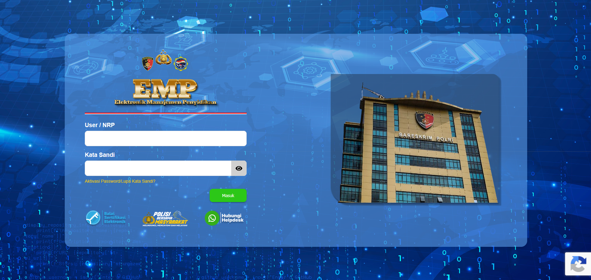
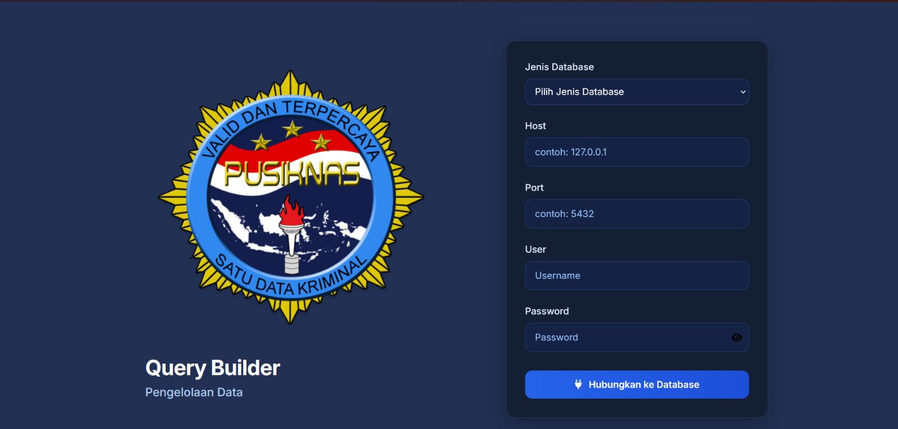

01 / APLIKASI LEMBAGAElektronik Manajemen Penyidikan (EMP) ↗
Kontribusi pada aplikasi web perusahaan untuk mendukung pengelolaan data kasus, alur kerja administratif, dan dokumen.
.NET 9BlazorMongoDBMudBlazorDevexpres
Halo, saya
membangun aplikasi web terstruktur dan perangkat lunak yang mudah dipelihara.
Sekilas tentang perjalanan saya sebagai pengembang perangkat lunak.
Saya seorang Web Developer dengan pengalaman 2 tahun dalam mengembangkan dan memelihara aplikasi web untuk kebutuhan perusahaan/lembaga. Pekerjaan saya mencakup pengembangan fungsi backend, REST API, penerapan aturan bisnis, serta integrasi aplikasi dengan basis data dan layanan eksternal.
Memanfaatkan teknologi AI sebagai pendukung proses pengembangan, mengoptimalkan data dan kode, serta membangun komponen UI yang modular dan dapat digunakan kembali. Saya juga memanfaatkan AI untuk membantu eksplorasi solusi, meningkatkan produktivitas, dan mempercepat proses debugging tanpa mengesampingkan pemahaman teknis serta kualitas kode.
Tertarik pada Teknologi Terutama pengembangan Web secara Full Stack, arsitektur perangkat lunak dan pengujia aplikasi.
Peralatan dan teknologi yang saya gunakan dalam pekerjaan.
Ringkasan bidang aplikasi dan pekerjaan rekayasa perangkat lunak yang pernah saya kontribusikan. Detail milik perusahaan tidak disertakan.

01 / APLIKASI LEMBAGAKontribusi pada aplikasi web perusahaan untuk mendukung pengelolaan data kasus, alur kerja administratif, dan dokumen.

02 / APLIKASI INTERNALBerkontribusi dalam pengembangan aplikasi web internal untuk menelusuri basis data serta mengefisienkan pelaporan operasional yang mencakup PostgreSQL, MySQL, dan Microsoft SQL Server.
Deskripsi proyek disederhanakan untuk melindungi sistem dan informasi rahasia. Deskripsi ini menjelaskan bidang kontribusi, bukan kepemilikan atas keseluruhan produk.
Pengalaman profesional dalam mengembangkan dan memelihara aplikasi perusahaan.
Membangun sistem otomatisasi pengumpulan data monitoring server menggunakan Python, Flask, dan Pandas. Sistem ini membantu menghasilkan laporan penggunaan CPU, RAM, dan Host Latency berdasarkan periode data yang di ambil dari Pandora FMS dan Grafana.
Latar belakang akademis dan proses belajar berkelanjutan.
Memperkuat dasar rekayasa perangkat lunak, desain API, pengujian, arsitektur bersih.
Saya terbuka untuk berdiskusi tentang peluang pengembangan Web, proyek menarik, dan kolaborasi. Silakan hubungi saya.
Sapa Saya ↗